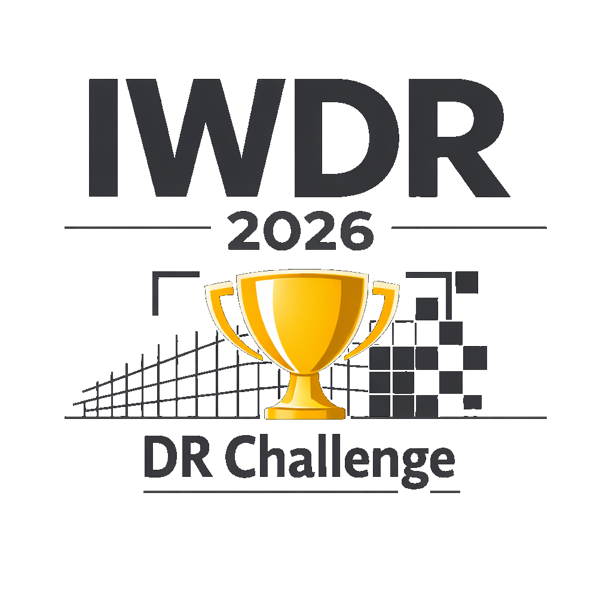
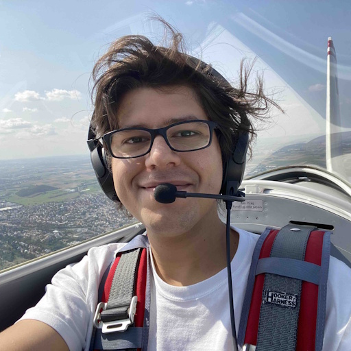

Int. Workshop on Diminished Reality
We are back 👍 IWDR was previously held at ISMAR 2015 and 2016. Recent advances in visual computing, neural rendering, and multimodal perception have made practical Diminished Reality (DR) applications far more feasible than a decade ago, creating a timely opportunity to revive the workshop and foster a new generation of DR research.

Dr. Mohamed Kari is a researcher at the FieldAI Research Institute whose work bridges interactive, real-time 3D graphics and vision systems for scene-aware augmented reality and robotics applications.
- DR core technologies: Object removal, scene completion & real-time inpainting; vision- and graphics-based DR pipelines; haptics, audio & multimodal sensor fusion
- DR applications: XR in medicine, industrial support, entertainment & telepresence; safety-critical environments; accessibility & situational awareness
- Perceptual issues in DR: User performance & task efficiency; perceptual thresholds, acceptance & comfort; cross-modal perception
- Dataset & benchmarking: DR datasets for training & evaluation; benchmarking methodologies, metrics & reproducible evaluation pipelines; standardization
Original research, surveys, demos, or position papers — up to 6 pages (excl. references) in IEEE CS VGTC conference format. Anonymous submissions receive two formal reviews. Accepted papers appear in the ISMAR 2026 Adjunct Proceedings on IEEE Xplore.
Participants receive a WebXR-based DR platform (AR tracking, 3D scanning, bounding-box detection, inpainting). Submit a demonstration video (≤ 2 min) recorded in your own environment plus a 2-page paper describing the algorithm and implementation details.
| Short paper submission | July 5, 2026 |
| Notification of acceptance | July 17, 2026 |
| Camera-ready materials | July 31, 2026 |
| DR Challenge — video & description submission | September 4, 2026 |
| DR Challenge — notification of invitation | September 18, 2026 |
| Workshop | October 5 or 6, 2026 |

Osaka Inst. of Technology, Japan
Univ. of Stuttgart, Germany
Univ. of Stuttgart, Germany
ÉTS, Canada
Ritsumeikan Univ., Japan
Ritsumeikan Univ., Japan
Univ. of Osaka, Japan
Tokyo City Univ., Japan